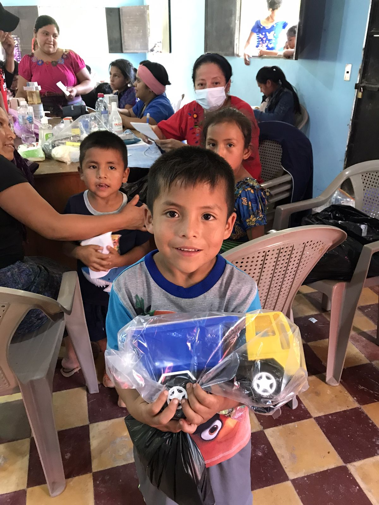
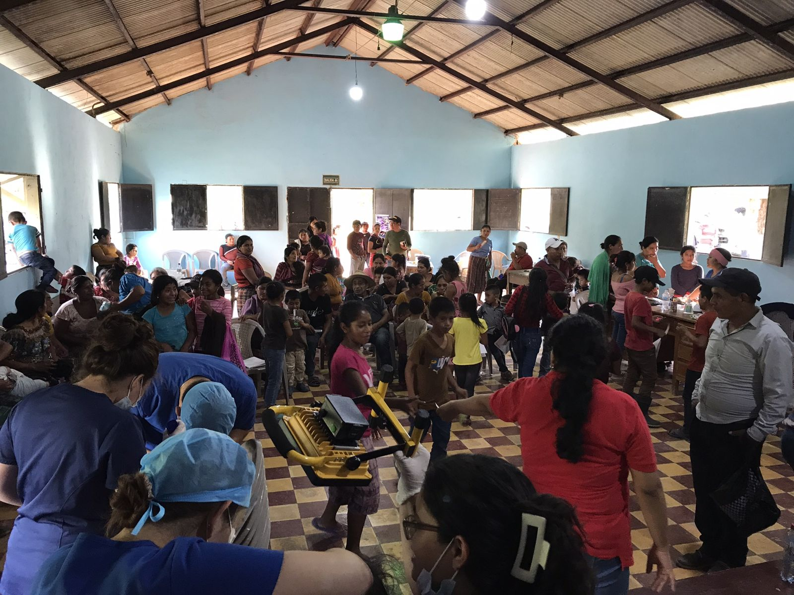
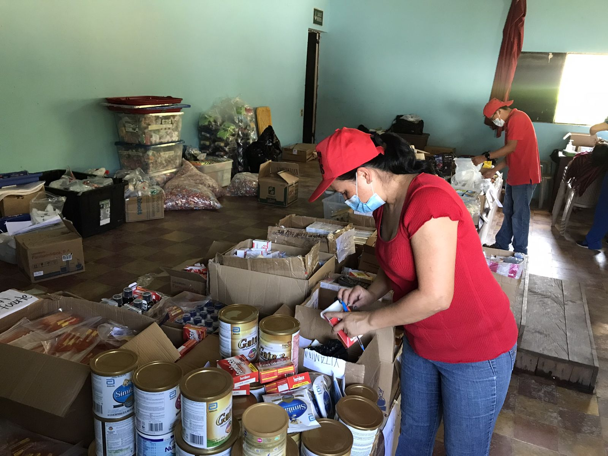
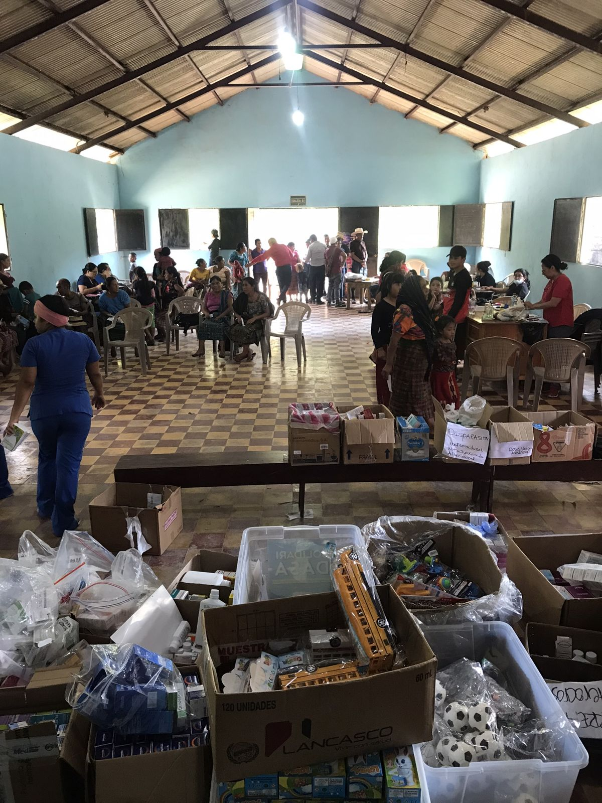

Atención pediátrica
Chequeos generales, evaluación nutricional, revisión de vacunas y tratamiento de enfermedades comunes.
Únete a nuestras jornadas médicas para niños en comunidades rurales de Guatemala. Profesionales de la salud y voluntarios sin formación médica: todos tienen un lugar en el equipo.
En muchas comunidades rurales e indígenas de Guatemala, el centro de salud más cercano queda a horas de camino. En cada jornada, un equipo médico llega directamente a la comunidad para revisar, prevenir y educar en salud a los niños y sus familias.
Chequeos generales, evaluación nutricional, revisión de vacunas y tratamiento de enfermedades comunes.
Trabajamos con promotores de salud y escuelas locales para que el cuidado continúe después de la jornada.
Información en español, inglés y portugués. No necesitas hablar español: hay intérpretes en el equipo.
Fotos reales de nuestras jornadas en comunidades de Guatemala.




Elige el rol que mejor encaje con tu experiencia. Si no estás seguro, te orientamos en la entrevista.
Consulta general pediátrica, diagnóstico y seguimiento de casos.
Triaje, signos vitales, peso y talla, curaciones y apoyo en consulta.
Revisión dental, aplicación de flúor y educación en higiene bucal.
Organización del inventario, despacho de medicamentos e instrucciones a las familias.
Puente entre el equipo y las familias (español ↔ inglés / portugués).
Registro de pacientes, montaje, actividades lúdicas y charlas de salud para niños.
Llena el formulario de solicitud. Toma menos de 5 minutos.
Una videollamada para conocer tu experiencia, disponibilidad y el rol ideal para ti.
Orientación en línea, guía de viaje y seguridad, y lista de documentos necesarios.
Te recibimos en el punto de encuentro y viajamos juntos como equipo a la comunidad.
No. El equipo cuenta con intérpretes. Aprender algunos saludos básicos siempre es bien recibido.
¡Claro! Hay roles de registro, interpretación, logística, farmacia (bajo supervisión) y educación para niños.
Muchas nacionalidades (por ejemplo Estados Unidos, la Unión Europea y Brasil) normalmente no requieren visa para estancias cortas de turismo (hasta 90 días). Confirma siempre los requisitos vigentes con la embajada antes de viajar.
Visita una clínica del viajero 4 a 6 semanas antes del viaje para recibir recomendaciones personalizadas.
Los costos y lo que incluyen (alojamiento, transporte local, alimentación) se explican en detalle durante la entrevista.
Sí, dentro del marco de la jornada. La organización gestiona los permisos con las autoridades locales; te pediremos copia de tu título y licencia.
Cuéntanos sobre ti y te contactaremos con las próximas fechas de jornada.
Próxima jornada: ·
Completa tus datos, el rol que te interesa y tu disponibilidad. Toma menos de 5 minutos.
Abrir formularioSe abre en Google Forms, en una pestaña nueva.